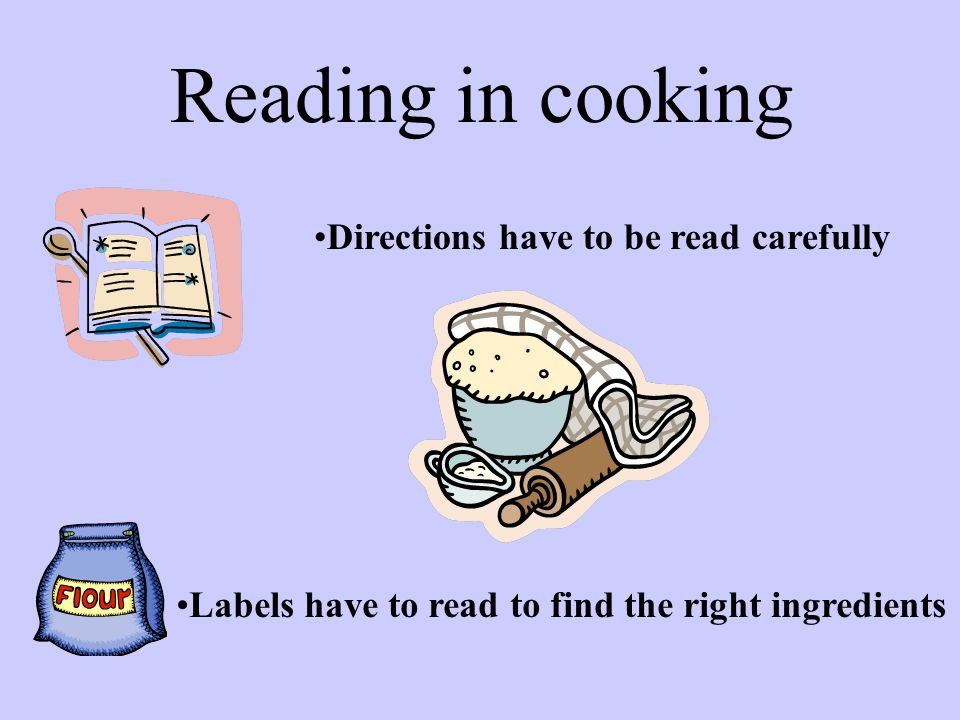

Whipping Up A "Crazy Fan Girl!"
Image credits to artist
Hi everyone! Today we will be making the highly requested "Crazy Fan Girl!" *Cue applause* Without further ado, let's get right into it.
Ingredients
- 4 cups flour
- 1 tbsp butter
- 2 tsps baking soda
- Sugar
- Spice
- Everything nice
- One incredibly hot KPop star
- Mary's 'Crazy Fan Girl' Gag Packet (available on my site and on Amozon!)
Directions
- We will be starting by thoroughly kneading the flour with the butter. We want a nice, plain but sweet base.
- Next, sprinkle in sugar, spice, and everything nice. Every crazy fan girl is just a normal girl at first, you know. Mix well.
- Lightly, gingerly sprinkle the teaspoons of baking soda into the mix.
- Now step back a little and throw the super hot kpop idol into the bowl. The baking soda will explode. No fan girl is expecting to be knocked off her feet by a good-looking Korean boy that clearly fell out of Heaven, but then again, no one is.
- Tear open the 'Crazy Fan Girl' Gag Packet. The first thing you'll find is a small baggie filled with music videos. Toss the music videos into the mix one by one, mixing lightly. The fan girl isn't really absorbing the content yet, just watching hot people dance.
- Once you think you've had enough music videos (the more you add, the crazier she will be), look in the Gag Packet once more and you will find a few posters. If you want to keep things low key, throw in some normal group posters. If you're really going for that insanity, you might want to focus on those ab shots.
- After the posters come the albums! Your CFG is getting invested!
- The ultimate investment comes in the form of concert tickets. You have quite the array to choose from. The more expensive the ticket, the more of a stan your Crazy Fan is going to be. If the concert tickets come with plane tickets to Korea as well, bingo! That's a rare item! If you found one, tweet it to me @Mary'sRecipes!
- Get an electric mixer and blend everything together really well. Your girl is absorbing all of this, and once your mixture is nice and creamy, the crazy in the crazy chick's head will finally click.
- Toss in a little dealing with the black market. Now she knows where her idol lives.
- Your fan girl moves to Korea. She purchases binoculars and an ultra-zoom camera (also in the Gag Packet) to peek on her beloved and follow their every move.
- Make sure you've been mixing all of this well all this time. Your batter is starting to smell like Madd Hatter Tea, huh? Wonderful, that means it's time to add the finishing touch: a restrianing order.
- Pop that baby in the oven at 450 degrees (cos Crazy FAN Girls are hot headed) and your CFG will be ready in an hour!
- This recipe makes one serving and one serving alone (the world doesn't need more).
- Best served with a slice of drama, a touch of insane, and a coating of "oPpA sArAnGhAe!"
Image credits to seoulbeats.com